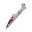

 Alice: Madness Returns
Details
 |
|
| Playtime | 3m 0s |
| Last Activity | 25.01.2023 19:14:41 |
| Added | 15.12.2023 17:11:24 |
| Modified | 12.02.2024 21:47:36 |
| Completion Status | Plan to Play |
| Library | Steam |
| Source | Steam |
| Platform | PC (Windows) |
| Release Date | 14.06.2011 |
| Community Score | 73 |
| Critic Score | 72 |
| User Score | |
| Genre | Adventure Hack and slash/Beat 'em up Platform Puzzle Quiz/Trivia |
| Developer | Spicy Horse Games |
| Publisher | Electronic Arts |
| Feature | Single Player |
| Links | Steam Wikipedia Official Wikia Twitch |
| Tag | |
Description

Eleven years ago a horrific fire took Alice’s family from her and left her mind horrifically scarred. Afterwards she was confined to Rutledge Asylum, where she struggled to confront her demons by slipping further into her fantasy world of Wonderland. Now, after ten years, she has finally secured her release—yet she still bears the heavy psychological burden of that tragic event.
With her mind in tatters, she is unable to resolve the fear prompted by her strange memories, dreams, and visions. Perhaps she’ll do better in Wonderland. She always has. She travels there, seeking what the “real” world can’t provide: security, knowledge, and the truth about the past. But in her absence, Wonderland too has suffered. Something has gone horribly wrong, and now a great evil is descending upon what once was her beautiful refuge. Can Alice save Wonderland—and herself—from the madness that consumes them both?
Key Features:
Intense 3rd person action:- Use multiple upgradeable melee weapons, including the explosive Teapot Cannon, the punishing Hobby Horse, and the classic Vorpal Blade.
- Encounter familiar but now strange characters, including the Cheshire Cat, the Mad Hatter, the Caterpillar and the Red Queen.
- Obtain peculiar abilities in Wonderland such as floating with Alice’s dress, shrinking, or growing to towering sizes in order to crush enemies.
- Intuitive and rewarding puzzles such as transforming obstacles, musical memories, chess, and picture blocks.